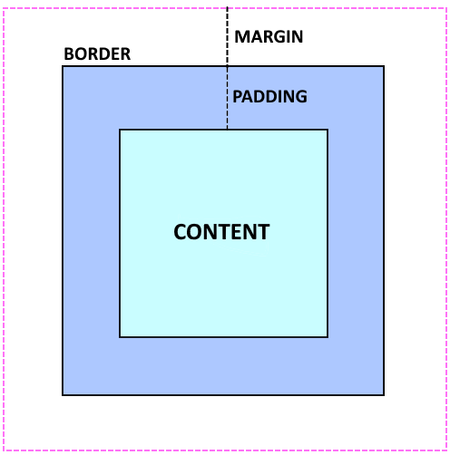

Technical 2 - What is the difference between margin, border and padding?
A diagram showing the differences between margin border and padding.
Content
The content is the content of the element, for example it could be text, an image or a video.
Padding
The dotted line in between the content of an element and the border indicates the area called the padding. Padding can be used to colour an area around the content of an element have things like images put in it.
Border
The border is of course a border that surrounds an element. The border can be modified to look many different ways, for example thickness, color, style i.e dotted, line etc. Or to not have a border at all.
Margin
The space between the border line and the dotted line is called the margin. The margin is the outside distance from an element to another elements outside distance from their said border. Changing the distance of the margin.
Extra Note
Its important to note that the padding and margin distance can be changed for each side individually For example in css:
#paragraph {
margin-top 50px;
margin-bottom: 30px;
margin-left: 20px;
margin-right: 20px;
}
would change the top margin of an element with the tag of "paragraph" by 50 pixels, the bottom margin by 30 pixels and the left and right margins by 20 pixels.